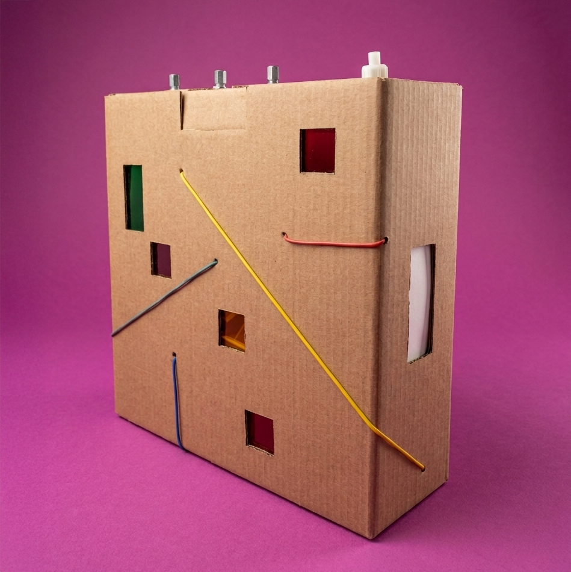
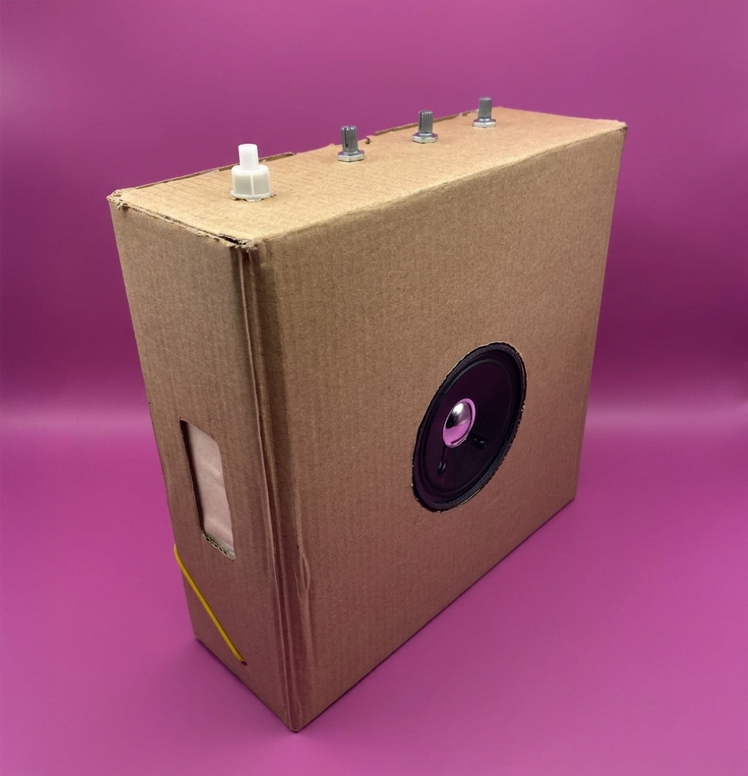
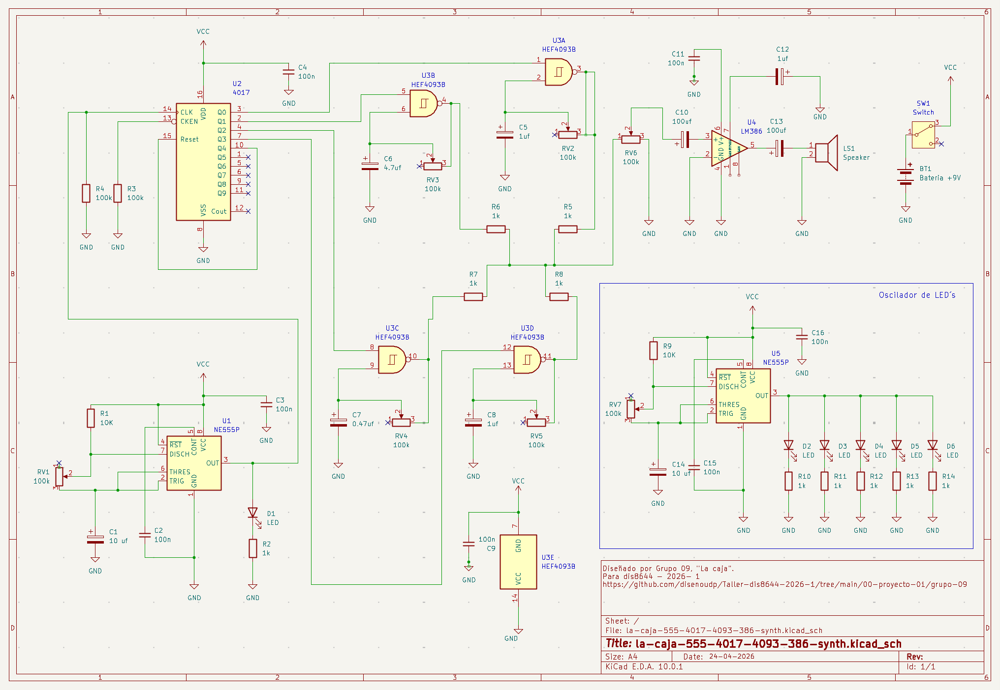
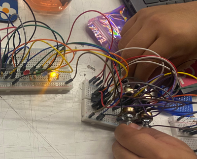
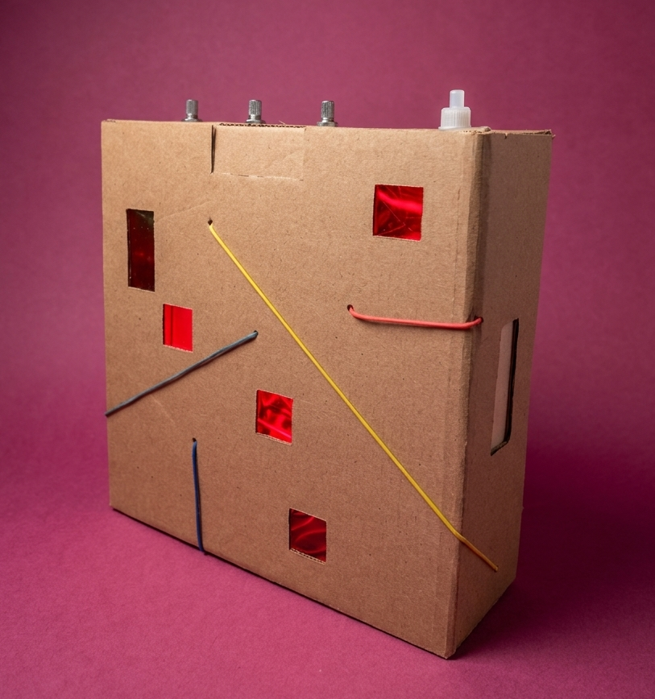
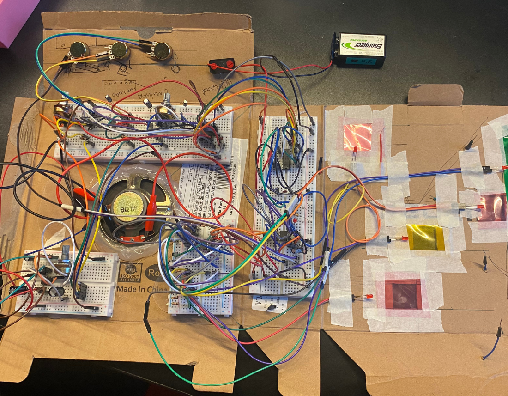
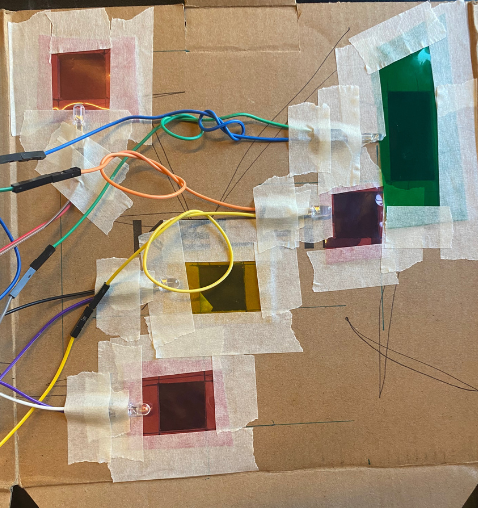
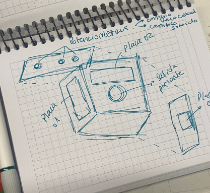

Dispositivo electrónico que genera sonido, creando un ritmo secuencial que el usuario puede deformar en tiempo real.
La Caja es una exploración del ruido: una pulsación constante que se convierte en punto de intervención directa. Adopta una estética de honestidad industrial, exponiendo sus cables con perforaciones de geometría de píxel que funcionan también como pantalla de luz rítmica interior.
El ciclo sonoro comienza con un chip 555 que genera el pulso, distribuido por un 4017 en cuatro pasos secuenciales. El 4093 configura el carácter sonoro como sintetizador, generando ondas cuadradas que el usuario puede deformar.
Genera onda cuadrada continua en modo astable. El pulso que no para.
Contador que activa 4 pasos en loop: Q0→Q1→Q2→Q3→Q0.
4 puertas NAND Schmitt. Cada una oscila a su propio tono con RC.
Amplificador que lleva la señal al parlante con potencia suficiente.

Cartón corrugado de desecho intervenido con perforaciones geométricas inspiradas en el píxel. La estructura deja visible parte de los cables internos como decisión estética: honestidad constructiva.
Potenciómetros de tempo e interfaz en el panel superior. Parlante en el panel trasero para que el sonido no apunte directo hacia quien escucha.






"La Caja se manifiesta como un insecto eléctrico atrapado en un loop, convencido de que si repite el mismo gesto suficientes veces va a encontrar la salida."